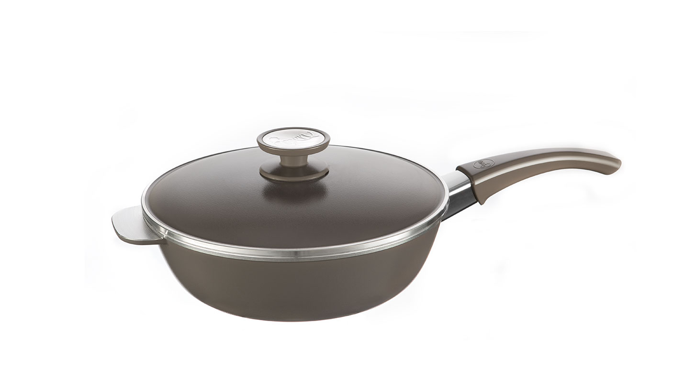

Cacerola
Cuerpo y tapa fabricados en aleacion de aluminio fundido. Perilla fabricada en polimero de ingenieria de gran resistencia termica y mecanica. Cuerpo y tapa recubiertos exteriormente con esmalte vitreo porcelanizado color Cherry.

Sartén
En esta Sartén podrá realizar recetas para compartir con 3 o 4 comensales. En conjunto con la Cacerola y la Bifera, son un equipo ideal para satisfacer las necesidades de la cocina. Sus capacidades son óptimas para alimentar a una familia promedio de 4 integrantes.
Budinera
La original forma de las budineras, brindan a la cocción una estética única y facilita el corte en porciones gracias a las marcas que generan los gajos en sus paredes laterales. Las budineras poseen una manija que permite sujetarlas con facilidad.
Flip
Flip nos permite preparar gran cantidad de recetas gracias a su multifuncionalidad. Se puede usar de ambos lados simplemente girándola con el mango, posee un cierre tipo sello que mejora la estanqueidad y centrado de las partes.

Grill
Pieza de diseño vanguardista, con gran capacidad de cocción gracias a su superficie longilínea cubriendo dos hornallas de la cocina. Su fuerte personalidad está determinada por las paredes laterales rectas que le confieren fortaleza y presencia en la cocina.

Wok
El Wok está recubierto interna y externamente por un antiadherente de 3 capas de color negro agrisado de alta calidad. Es ideal para salteados y grillados.